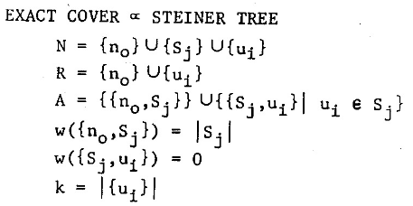
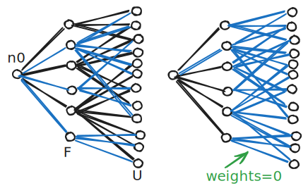

| tags:[ math ]
Steiner tree - Reducibility Among Combinatorial Problems
There is a mistake in Steiner tree reduction in Karp’s paper, however, the result is still true. Let me go over the reduction mentioned in “Reducibility Among Combinatorial Problems” paper explicitly. The problems are defined as follows (paraphrased).
- Exact Cover
- Input: family $\mathcal F={S_1,\dots,S_n}$ of sets over a universe $U$
- Output: Is there a subfamily $\mathcal H \subseteq \mathcal F$ such that every element $u_i \in U$ is in exactly one set of $\mathcal H$.
- Steiner Tree
- Input: graph $G$, terminal vertices $R \subseteq V(G)$, edge weights $w$, integer $k$
- Output: Does $G$ contain a tree subgraph of weight $\le k$ that contains all vertices of $R$?
The reduction looks as follows.

We create 3 sets of vertices, one global “root” $n_0$, one vertex for each set $S_j$, and one vertex for each element of the universe $u_i$. We connect all sets to the root and all elements to sets they are contained in. The budget is set to $|U|$. By setting teminals to have the root and universe elements we aim to model selection of the sets by connections from $n_0$ that are chosen to the Steiner tree solution.
The problem is in having weights 0 edges that connect sets with universe elements. So we can just include all (spanning tree of all) the edges between sets $\mathcal F$ and unvierse elements $U$. On the following figure observe the difference between the intended solution (left), and a feasible minimal solution (right).

Even with the incorrect reduction the result is true as we can apply a different set of redcutions to get a stronger result. We have the following 3-reductions:
- 3-SAT to 3-Dimensional Perfect Matching
- 3-Dimensional Perfect Matching to 3-Exact Cover (trivial)
- 3-Exact Cover to Unweighted Steiner Tree
Let us first define the problems.
- 3-SAT
- Input: logical formula in CNF with all clauses having at most 3 literals
- Output: Is there a variable assignment such that the formula evaluates to true?
- 3-Dimensional Perfect Matching
- Input: 3-partite graph
- Output: Is there a graph partition where each part is a triangle?
- Exact Cover by 3-Sets
- Input: family $\mathcal F={S_1,\dots,S_n}$ of sets over a universe $U$, each set of size 3
- Output: Is there a subfamily $\mathcal H \subseteq \mathcal F$ such that every element $u_i \in U$ is in exactly one set of $\mathcal H$.
- Unweighted Steiner Tree
- Input: graph $G$, terminal vertices $R \subseteq V(G)$, integer $k$
- Output: Does $G$ contain a tree subgraph with at most $k$ edges that contains all vertices of $R$?
3-SAT to 3-Dimensional Perfect Matching
- variable gadget
- cycle of triangles where from each triangle we use only two vertices
- covering different parities of the cycle represents different variable valuations
- clause gadget
- for each variable occurrence $u \in C$ have that literal from variable gadget appear in ${u,c_1,c_2}$ where $c_1,c_2$ are fixed for each $C$ separately
- for $c_1,c_2$ to be covered we need to cover one of the literals that appear in it
- garbage collection
- number of occurrences minus clauses garbage gadgets are created
- each contains $g_1,g_2$ of its own and is connected to all occurrences of all variables
- this simply covers all literals that were not used to cover the clause gadget vertices
Found here: Garey and Johnson - Computers and Intractability: A Guide to the Theory of NP-Completeness ↗.
3-Dimensional Perfect Matching to 3-Exact Cover (trivial)
3-Exact Cover is a generalization of 3-Dimensional Perfect Matching.
Noted here: Garey and Johnson - Computers and Intractability: A Guide to the Theory of NP-Completeness ↗.
3-Exact Cover to Unweighted Steiner Tree
Curiously the reduction is exactly the same as the one in Karp’s paper except for weights, that are all equal to 1. The budget is set to $4/3|U|$. For the proof, as $U$ needs to be connected each vertex of $U$ is incident to at least one edge, this uses $|U|$ of the budget. As each $\mathcal F$ has degree at most 3 to $U$, we know that the selected edges incident to $U$ are incident to $q \ge |U|/3$ vertices of $\mathcal F$. These, along with $n_0$, constitute $q+1$ disjoint trees of the solution, so we need to use at least $q$ budget to join them. The solution does not care how the components are joined as long as the budget used is at most $q$, so we can simply connect all trees to $n_0$. We get a feasible solution iff $q=|U|/3$, which represents the exact cover by $q$ sets; $|U|+q = 4/3|U|$.
Found here: Alessandro Santuari - Steiner Tree NP-completeness Proof ↗.
As noted in a Computational Complexity blog ↗, there is no point in retroactively fixing this because the result is still correct.